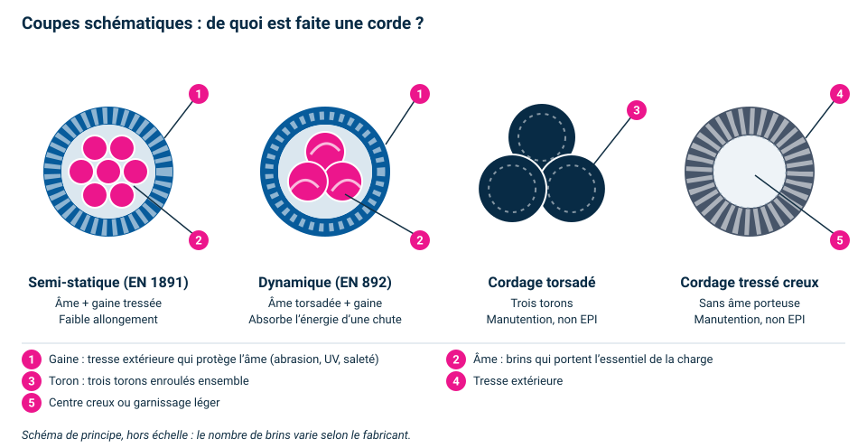

CONSULTEAM SECURITY · SECU37Travail en hauteur · Port du harnais
Matériel · Fiche simple
Cordes : types, contrôle et entretien
Une corde est un équipement de sécurité : on sait ce qu’on a en main, on la contrôle avant chaque usage et on la range proprement. En cas de doute, on la met de côté.
De quoi est faite une corde ?

Coupes schématiques : la gaine protège, l’âme porte. Touchez l’image pour l’agrandir.
Semi-statique : une âme de brins serrés et une gaine tressée. Peu d’allongement : la corde du travail en hauteur.
Dynamique : âme torsadée plus souple. Elle s’allonge et absorbe l’énergie d’une chute, ce qui convient à l’escalade.
Torsadée (trois torons) et tressée creuse : cordages de manutention. Ils ne portent pas de personne.
Corde, casque et connecteurs : l’ensemble se contrôle avant chaque usage. Illustration générée, non contractuelle.Antichute mobile sur corde : seule la corde prescrite par le fabricant convient. Illustration générée, non contractuelle.
Quels types de cordes ?
Type
Allongement
Usage courant
À retenir
Statique ou semi-statique (EN 1891, type A ou B)
Faible
Ancrage, installation, travail sur corde, descente, manœuvres
Le type A est le plus résistant. C’est la corde du travail en hauteur.
Dynamique (EN 892)
Forte, elle absorbe l’énergie d’une chute
Escalade, alpinisme
Pas pensée pour le travail en suspension prolongée ni pour les points d’ancrage de chantier.
Corde de dispositif antichute mobile (EN 353-2)
Faible
Support d’un antichute mobile sur corde
Uniquement la corde prescrite par le fabricant du dispositif : on ne mélange pas.
Cordage de manutention (polypropylène, sisal…)
Variable
Guider ou hisser du matériel, balisage
Pas un EPI. Ne jamais s’y suspendre ni s’y retenir.
Les cordes de travail en hauteur sont le plus souvent à âme et gaine : l’âme porte la charge, la gaine la protège. Matière courante : polyamide ; autres matières possibles selon la notice.
Avant chaque utilisation
Vérification périodique. Une corde est un EPI : elle fait aussi l’objet d’une vérification générale périodique par une personne compétente, au minimum annuelle selon la notice du fabricant et la réglementation (R.4323-99 et suivants), avec une traçabilité (registre ou fiche de vie). À confirmer par le service sécurité.
Entretien et stockage
À faire
Laver à l’eau claire tiède (moins de 30 °C) avec un savon doux, si elle est sale.
Rincer, puis sécher à l’air, à l’ombre, loin d’une source de chaleur.
Ranger dans un sac propre, au sec, à l’abri de la lumière.
Protéger la corde sur les arêtes vives avec un protège-corde.
Noter chaque usage notable dans la fiche de vie.
À éviter
Marcher sur la corde ou la traîner au sol.
Contact avec acides, solvants, carburants ou produits ménagers.
Séchage au radiateur, au soleil ou avec une source de chaleur.
Frottement sur une arête, un angle ou une autre corde sous tension.
Stockage humide ou exposé aux UV.
Quand mettre une corde au rebut ?
Coupure de gaine ou âme visible.
Zone très raide, très molle ou aplatie.
Contact avec un produit chimique ou une source de chaleur.
Corde ayant subi une chute importante ou une forte charge.
Marquage illisible, historique inconnu ou doute sur son état.
Fin de la durée de vie indiquée par le fabricant.
Règle simple : une corde douteuse est retirée du service, marquée « HS » et signalée. Elle n’est pas réutilisée « pour un petit usage ».
Comment les cordes sont fabriquées et testées
Fabrication, en bref
Fibres de polyamide, contrôlées à la réception.
Retordage : les fils sont tordus pour donner leurs propriétés mécaniques.
Tressage de l’âme, puis de la gaine autour d’elle.
Thermofixage : la chaleur règle l’élasticité et équilibre le retrait de l’âme et de la gaine.
Marquage et prélèvements d’échantillons testés jusqu’à la rupture.
Essais de la norme EN 1891 (ordres de grandeur)
Essai
Type A
Type B
Masse d’essai
100 kg
80 kg
Rupture statique, mini
≈ 22 kN
≈ 18 kN
Rupture avec nœud d’extrémité
≈ 15 kN
≈ 12 kN
Chutes d’essai (facteur 0,3)
5 minimum
5 minimum
Allongement statique, maxi
5 %
5 %
Glissement de la gaine, maxi
1 %
1,5 %
Valeurs reprises de L’Équipeur (EN 1891) et converties en kN : à confirmer avec la norme ou la notice du fabricant.
Pour en savoir plus
Articles et publications à lire : ce ne sont pas des vidéos.
Liens trouvés par recherche, à contrôler avant diffusion. Ces pages décrivent surtout les cordes d’escalade et de travaux sur cordes ; la notice du fabricant reste la référence de votre corde.
Repères
Un nœud diminue la résistance d’une corde (de l’ordre de 20 à 50 % selon le nœud).
Les durées de vie et les périodicités dépendent de la notice du fabricant et de l’usage.
Références : EN 1891 (cordes semi-statiques), EN 892 (cordes dynamiques), EN 353-2 (antichute mobile sur support flexible), R.4323-99 à R.4323-103 (vérification des EPI), notices des fabricants.